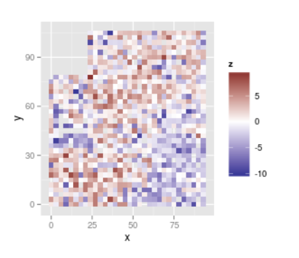
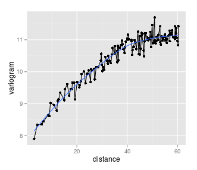
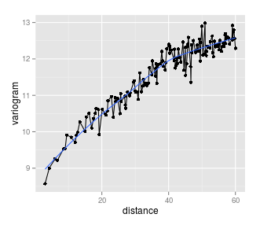
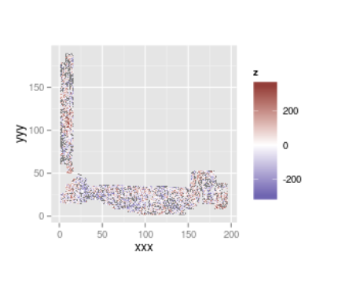
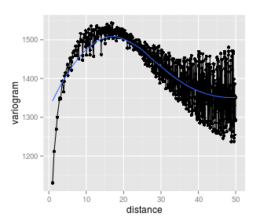
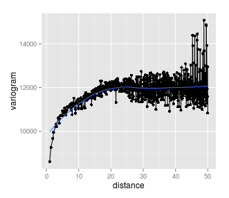

October 19, 2015
http://famuvie.github.io/breedR/doc/developments.html
Bugfixes
Since Jaca…
- June's training workshop:
breedR v0.10 - Today:
breedR v0.10-14
Two important fixes were notified to breedR's mailing list
Memory issues (reported by Jan Kowalczyk in GitHub)
Bug in the
variogram()plot
Memory issues
Under certain scenarios, the AR model consumed lots of memory
Even with data of moderate size
Two problems:
The AR model builds a regular grid containing all the individuals. The size of the grid can be much larger than N.
(Most importantly) AR was building unnecessary copies of matrices in non-sparse format
Fixed from
breedR v0.10-9
The bug in the variogram plot
Affects the calculation of the variograms under some circunstances.
When there were many holes in the field, it was treating the empty spaces as observations with a value of 0.
The problem did not affect in any way the results of the models fitted with
remlf90(). So your results were correct and reliable.
Scenario 1
Model residuals in a field trial with little or no holes
Difference in variograms
Before and after the fix
 
Scenario 1
Model residuals in a field trial with lots of holes
Difference in variograms
Before and after the fix
 
Solution
Adapt the function
fields::vgram.matrix()forbreedRSide effects
Remove dependency with package
fieldsReported another bug in the function to
fieldsmaintainerReturn number of pairs for each variogram bin
Fixed from
breedR v0.10-13
Computation of heritability and its SE
Possible alternative calculations
\[ h^2 = \frac{\sigma_a^2}{\sigma_{\mathrm{phenot}}^2} = \frac{\sigma_a^2}{\sigma_a^2 + \cdots + \sigma_e^2} \]
Some authors exclude the variance of the spatial effect from the denominator (e.g. for comparability among sites)
Need flexibility to compute it in different ways
Sensible default: include all variance components in the denominator
Approach:
General interface to
OPTIONSinPROGSF90Exploit option
se_covar_functioninAI-REMLwhich allows estimating a function of the variance components, and its SEGenerate default formula for heritability including all variance components, unless otherwise indicated by the user
Parse results and display in the summary()
Updates of PROGSF90 binaries
Goals
Avoid distributing binaries for all 3 main platforms with
breedRStop distributing 32bit programs only: take advantage of 64bit architectures (memory)
Approach
Separate the
Rpackage (frontend) from the Mixed Model engine (backend)Download (automatically) the appropriate backend at installation time
Implications
More complex installation \(=\) more oportunities for issues
Can not simply download latest binaries from PROGSF90: uncontrolled changes could break
breedRNeed to maintain a repository with the latest tested binaries
- The 64bit binaries for Windows require yet additional libraries from Intel. Alternatives:
- distribute dll (easy, but Intel does not like)
- give installation instructions to the user (yet another installation step)
Default colour map
Colour palettes
Concern 1
Perceptual uniformity
Concern 2
Colour blindness
Concern 3
Black & White (printed) readability
Adopt viridis for sequential variables
Not so sure about divergent variables
- What do you think?
Comparison of spatial models
Goals
- Study the relative performance of
blocks,splinesandARin a diversity of scenarios

Approach
- Cross-Validation study with several datasets of diverse characteristics
(Advance of) results
The
splinesandARmodels clearly outperform theblocksmodelARis usually slightly better thansplinesin most situationsWe detected some (suspected) sensitivity with
ARunder certain situations wheresplinesmay be more conservative (and safer). This is work in progressGeneral recommendation: run both, compare, evaluate and decide.
If both models agree, then everything is ok.